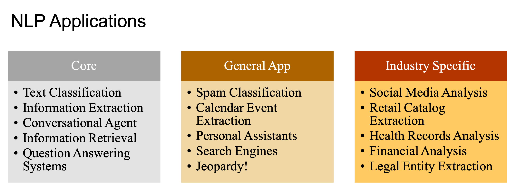

Natural Language Processing: A Primer#
This section provides a quick overview of natural language processing, or, more broadly speaking, computational linguistics. This is a very active field in applied linguistics because it is closely connected to the development of human language technology. The term natural language processing is a more specific term referring to the sub-field of computer science that deals with methods to analyze, model, and understand human language.
Contents
NLP Applications#

NLP Tasks and Language Blocks#

NLP Challenges#
Ambiguity: Natural language is inherently ambiguous, with words and phrases often having multiple meanings or interpretations depending on context.
I made her duck.
He is as good as John Doe.
The trophy doesn’t fit into the brown suitcase because it’s too [small/large]. What is too [small/large]?
Creativity: Human language is highly creative, allowing for infinite possibilities in expression and interpretation. This creativity poses challenges for NLP systems in generating and understanding novel or unconventional language patterns.
Diversity: Language exhibits significant diversity across different contexts, cultures, dialects, and individual speakers. NLP systems trained on specific datasets may encounter difficulties when faced with linguistic variations that differ from the training data.
Common Knowledge (Context): Understanding language often requires background knowledge and context that may not be explicitly stated in the text. NLP systems must be able to incorporate common knowledge and contextual information to accurately interpret and generate language. However, capturing and representing common knowledge in machine-readable formats poses a significant challenge for NLP, as it often relies on world knowledge and domain-specific information that may not be readily available in structured data sources.
Note
Please check the examples from Winograd Schema Challenge. These examples include sentences that differ in only a few words, but these minor differences often lead to drastic meaning changes.
Artificial Intelligence, Machine Learning, Deep Learning and NLP#
Artificial Intelligence is a branch of computer science that aims to build systems that can perform tasks that require human intelligence.
Machine Learning is a branch of AI that deals with the development of algorithms that can learn to perform tasks automatically based on large number of examples, without requiring handcrafted rules.
Deep Learning is a branch of machine learning that is based on the artificial neural network architectures.
Approaches to NLP#
Heuristics-based NLP#
Heuristics-based NLP approaches rely on predefined rules and patterns to process natural language. These rules are typically crafted by linguists or domain experts based on linguistic principles and knowledge. Heuristic methods involve designing algorithms that encode linguistic rules to perform tasks such as part-of-speech tagging, named entity recognition, and syntactic parsing. While heuristics-based NLP can be effective for handling specific linguistic phenomena and tasks, it often requires extensive manual effort to design and maintain the rules, and may struggle with handling the complexity and variability of natural language.
Examples:
Dictionary-based sentiment analysis
WordNet for lexical relations
Common sense world knowledge (Open Mind Common Sense, Ontology)
Regular Expressions
Context-free grammar
Strengths:
Rules based on domain-specific knowledge can efficiently reduce the mistakes that are sometimes very expensive.
Machine Learning NLP:#
Machine Learning (ML) NLP approaches leverage statistical models and algorithms to learn patterns and structures from large amounts of annotated text data. These models are trained on labeled datasets to automatically extract features and make predictions for various NLP tasks. Common ML techniques used in NLP include Support Vector Machines (SVM), Hidden Markov Models (HMM), Conditional Random Fields (CRF), and Maximum Entropy Models (MaxEnt). Machine Learning NLP systems excel at tasks such as text classification, sentiment analysis, and machine translation, and can handle more complex linguistic phenomena compared to heuristics-based approaches. However, they require significant amounts of labeled data for training and may struggle with handling ambiguity and linguistic variability.
Types of machine learning:
Supervised vs. Unsupervised
Classification vs. Regression
Three common steps for machine learning
Extracting features from texts
Using the feature representation to train a model
Evaluating and refining the model
Common methods:
Naive Bayes
Logistic Regression
Support Vector Machine
Hidden Markov Model
Conditional Random Field
Deep Learning for NLP:#
Deep Learning for NLP involves using neural network architectures, particularly deep neural networks with multiple layers, to model and process natural language data. Deep Learning models, such as Recurrent Neural Networks (RNNs), Long Short-Term Memory (LSTM) networks, and Transformer models, have shown remarkable success in various NLP tasks due to their ability to learn hierarchical representations of text data. These models can automatically learn intricate patterns and dependencies in the data, making them highly effective for tasks such as language modeling, sequence-to-sequence generation, and contextual word embeddings. Deep Learning for NLP has led to significant advancements in areas such as machine translation, text summarization, and question answering, and continues to be an active area of research in the field.
Common methods:
Convolutional Neural Network (CNN)
Sequence Models
Recurrent Neural Network (RNN)
Long-Term Short-Term Memory (LSTM)
Attention and Transformers

Strengths of Sequence Models
It reflects the fact that a sentence in language flows from one direction to another.
The model can progressively read an input text from one end to another.
The model have neural units capable of remembering what it has processed so far.
Transformers
The state-of-the-art model in major NLP tasks.
These models excel at capturing long-range dependencies and have become the backbone of many state-of-the-art NLP systems.
It leverages the attention mechansim to model the textual context in a non-sequential manner, capturing long-range dependencies and contextual information within a sequence.

Note
Simply put, now the deep learning NLP capitalizes on the power of attention. It is a mechanism that allows the model to learn which parts of the input sequence (i.e., the contextual information) are more relevant to the target task, giving more weight to important words or phrases.
Imagine you’re reading a long story. Sometimes, certain parts of the story are more important than others. The attention mechanism in deep learning works like a spotlight, highlighting these important parts as the story unfolds. It helps the model focus on the most relevant information at each step of processing, just like how you might pay attention to key details as you read.
Traditional NLP approaches typically treat language as a fixed sequence of words and process it in a linear fashion. They often process entire sequences in one go, which can be computationally challenging for long texts. However, with attention, the model can selectively focus on different parts of the sequence, giving more weight to important words or phrases. This makes the model more accurate and efficient, especially when dealing with complex language tasks like translation or summarization.
Transfer Learning
Transfer learning is a machine learning technique where a model pre-trained on one task or dataset is reused as a starting point for training a model on a different but related task or dataset.
This reuse is often done through fine-tuning of the pre-trained models.
In Deep Learning NLP, transfer learning is important because it allows leveraging pre-trained models to achieve good performance with limited task-specific data.
By adapting pre-trained models to specific domains or tasks, transfer learning reduces training time and improves performance on task-specific objectives.
Deep Learning is NOT Everything#
The trend now is to leverage large transformer models (large language models) for generic NLP tasks. Subsequently, these pre-trained models are customized and fine-tuned to address smaller, more specific downstream tasks.
Overfitting on Small Datasets:
Occam’s Razor: Large language models may suffer from overfitting when trained on small datasets, as they have a high capacity to memorize the training data, leading to poor generalization to unseen data. Balancing model complexity with generalizability, following Occam’s razor principle, becomes crucial.
Data Accessibility: Access to large, diverse datasets is limited, especially for specialized domains. Few-shot learning techniques aim to address this challenge by enabling models to learn from a small amount of annotated data.
Domain Adaptation (Genres):
Adapting pre-trained models to specific domains or genres remains a challenge. Domain-specific linguistic variations, styles, and terminologies require fine-tuning or retraining of the pre-trained models to achieve optimal performance across different domains.
Interpretable Models:
Understanding and interpreting the decisions made by large language models pose significant challenges. The complex, non-linear nature of the deep-learning architectures makes it difficult to extract meaningful insights or explanations for model predictions, hindering model interpretability and trustworthiness.
Common Sense and World Knowledge:
Incorporating common sense reasoning and world knowledge into large language models remains an ongoing challenge. While models can learn from vast amounts of text data, it is still not clear how the model can capture and encode implicit knowledge and understanding of the world, affecting the quality of generated text and responses (e.g., hullucinations, biases).
High Cost of Deep Learning:
Deep Learning requires high computational costs, both in terms of data requirements and specialized hardware such as Graphics Processing Units (GPUs) or Tensor Processing Units (TPUs). Large language models are data-intensive and require extensive computational resources for training, making them inaccessible to smaller research teams or organizations with limited resources.
Deployment and maintenance of deep learning models add to the overall cost, as it involves infrastructure setup, model optimization, and ongoing monitoring and updates.
On-device Deployment:
Deploying large language models on edge devices or resource-constrained environments presents challenges in terms of model size, memory requirements, and computational efficiency. Optimizing models for on-device deployment while maintaining performance and accuracy is an area of active research and development.
Conclusion#
The future of AI in natural language processing (NLP) is evolving, and several key points shape its trajectory:
Diversification of Approaches:
Deep learning, while powerful, may not always be the optimal solution for industrial NLP applications. Other traditional machine learning methods can offer competitive performance, particularly in scenarios with limited data or where interpretability is critical (e.g., linguistic/language studies).
Interpretability Challenges:
Many deep learning models lack interpretability, hindering our ability to understand the sources of empirical gains. Addressing this challenge is crucial for building trust in AI systems and ensuring accountability in decision-making processes.
Baseline Performance Evaluation:
It’s essential to start by evaluating traditional machine learning methods on target tasks to establish baseline performance. This approach provides valuable insights into the strengths and limitations of different techniques and helps guide the development of more sophisticated AI systems.
Incorporating Linguistic Knowledge:
Linguists play a crucial role in incorporating linguistic knowledge into computational modeling. By leveraging linguistic principles and theories, such as syntax, semantics, and pragmatics, linguists can enhance the effectiveness and interpretability of AI systems. This collaboration between linguists and AI researchers leads to more robust and linguistically informed NLP models.
References#
Chapter 1 of Practical Natural Language Processing. [Vajjala et al., 2020]